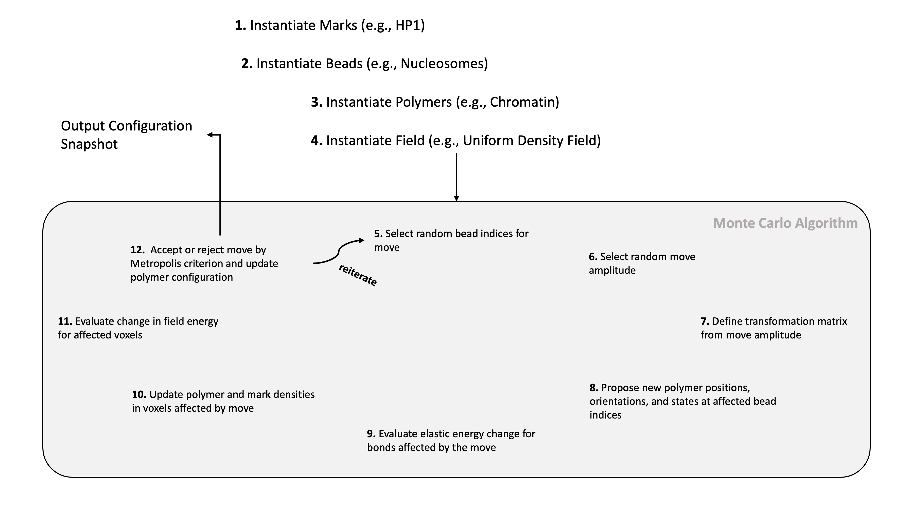

Monte Carlo Simulations¶
Chromo leverages Monte Carlo (MC) sampling to obtain ensembles of near-equilibrium polymer configurations. During MC sampling, random configurational changes to the polymer are proposed. We have implemented five types of configurational changes:
Slide: Translation of a continuous segment of beads in a random direction
Crank-Shaft: Rotation of an internal segment of the polymer about the axis containing the segment
End-Pivot: Rotation of a segment on one end of the polymer about an arbitrary axis
Tangent Rotation: Rotation of the tangent vectors of random beads in the polymer
Binding State: Random changes in HP1 binding state
After applying each configurational change to the polymer, we determine the associated energy change. The energy difference is comprised of two parts: an elastic energy change in the bonds of the polymer and a field energy change accounting for bead interactions. The energy change is accepted or rejected according to the Metropolis criterion; all energetically favorable moves (associated with a decrease in energy) are accepted, and energetically unfavorable moves (associated with an increase in energy) are accepted with exponentially decaying probability. Below is a schematic of how the MC algorithm is used in the context of our simulator.
